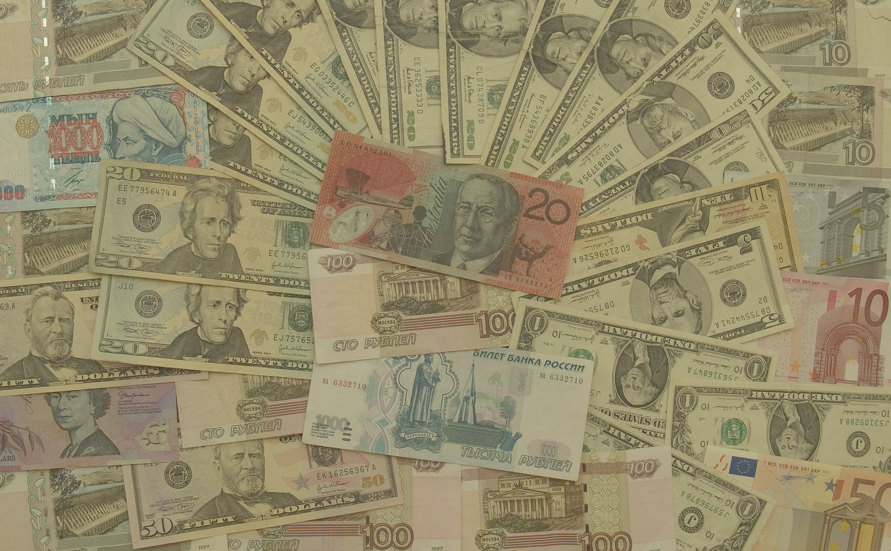
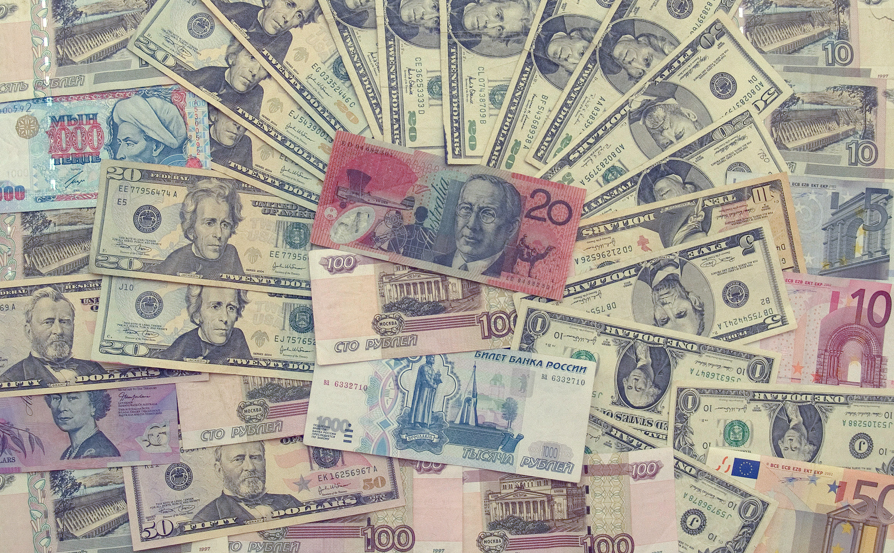
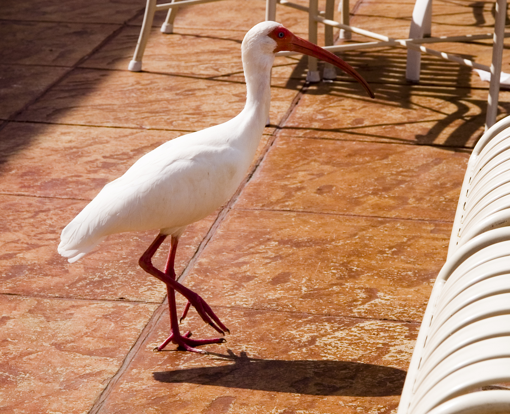
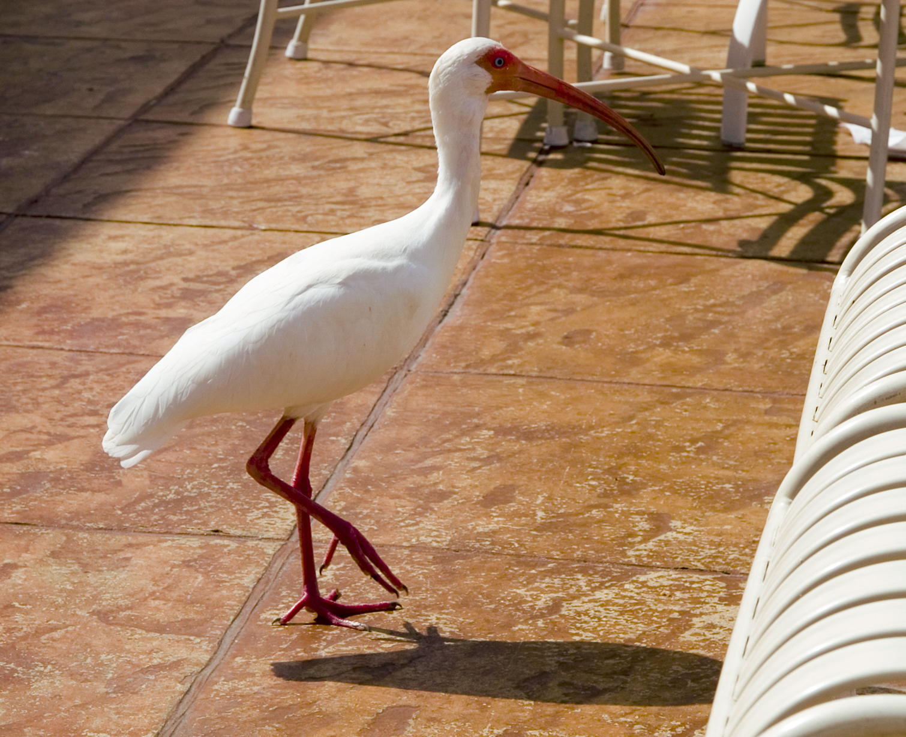
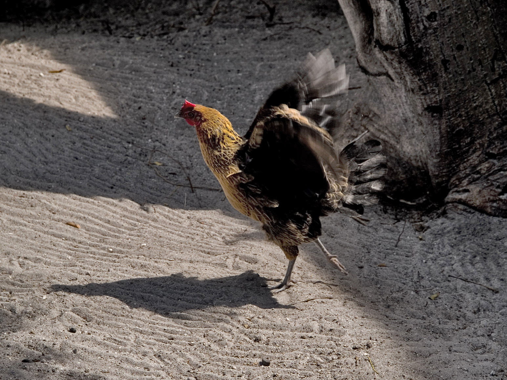

Highlights, Midtones, and Shadows
Auto Features

Before
After Auto Color
After Auto Contrast

After Auto Tone
The Monument

After Before

After Auto Color
Editing Contrast

Before

After Contrast Edit
Dealing with Shadows

Before

After Shadows Edit